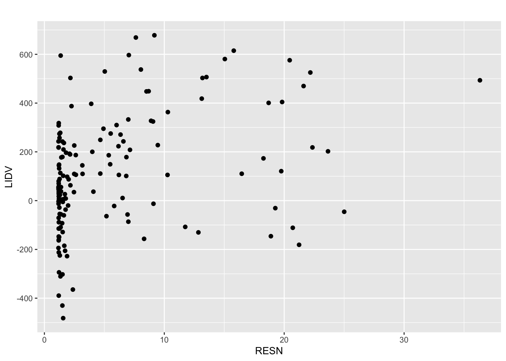
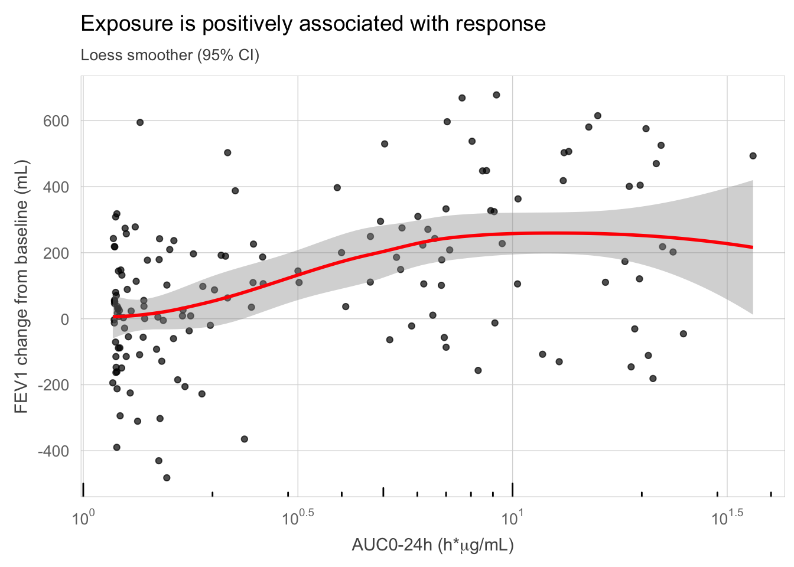
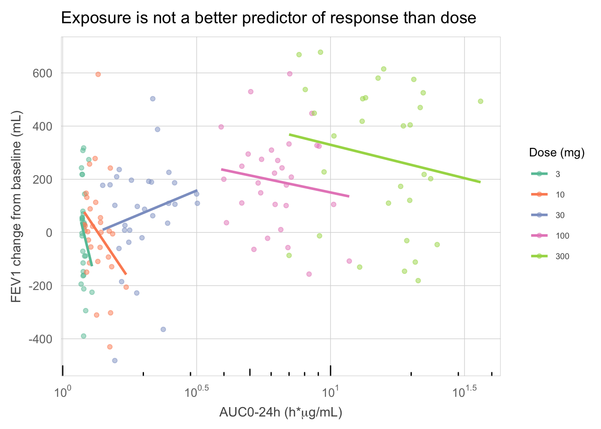

This example illustrates the importance of understanding the scientific context when exploring data graphically. An exploratory data analysis is more than just “plotting data”; it can lead to a deeper understanding and inform next steps (Gabry et al. 2019; Gelman 2004). However, like an analysis that is poorly thought through, a poorly implemented graph can also deceive.
Consider an inhaled drug intended to improve lung function, with the target site of action in the lung. The drug is also absorbed systemically from the lung. Suppose that the team wants to fine-tune the choice of a recommended dose. A typical starting point for this question is often a plot of the response variable of interest against a summary measure of plasma concentration (e.g. the area under the concentration time curve, AUC). Figure 1 shows such a plot, generated using the default settings of the R package ggplot2.
## Read in datamy_data <-read_csv("../../data/401_case1_PKPDdataset_ard.csv") %>%filter(CYCLE ==1)## Plot response vs exposuremy_data %>%ggplot(aes(x = AUC, y = sCHG)) +geom_point() +scale_y_continuous(breaks =seq(-800, 800, 200)) +theme_gray(base_size =10) +labs(x ="RESN", y ="LIDV", title ="")

A scatterplot of response vs. exposure with ‘default’ ggplot theme. It is common during an exploratory data analysis to display variable names directly from source data rather than an informative description. For this example RESN = AUC0-24h (h*ug/mL) and LIDV = FEV1 change from baseline (mL).
In terms of good graphical principles, this plot leaves a fair bit to be desired. Several improvements are warranted, including proper axis scaling, gridlines, annotation, font size, etc. One particularly egregious issue is the lack of care in selecting axis labels, leaving programming labels for the plotted variables (presumably only then to make the effort of explaining them in a caption). An improved version is shown in Figure 2, addressing many of these formatting issues. With an added LOESS smoother (Cleveland 1979), we see a positive non-linear trend, suggesting a shallow sigmoidal exposure-response relationship.
my_data %>%ggplot(aes(x = AUC, y = sCHG)) +geom_point(alpha =0.7) +geom_smooth(method ="loess", colour ="red") +scale_x_log10(breaks = lbr, labels = llb) +scale_y_continuous(breaks =seq(-800, 800, 200)) +annotation_logticks(sides ="b") +labs(x =expression(paste("AUC0-24h (h*",mu,"g/mL)", sep ="")),y ="FEV1 change from baseline (mL)", title ="Exposure is positively associated with response",subtitle ="Loess smoother (95% CI)" ) +paper_theme()

An improved scatterplot of exposure vs. response, including a LOESS smoothing curve to help visualizing the trend.
It is tempting, especially when presented with a suboptimal graph, to immediately set about fixing the various graphical imperfections and produce a more appropriate and visually appealing version of the same graph. This is an example of selective attention, focusing on the detail but overlooking the higher purpose of the task (i.e. the “why”). Instead, let us now take a step back and revisit this example in the context of the first law of visual communication: have a clear purpose.
Why are we conducting an exposure-response analysis? Recall that the scientific interest is to fine-tune the dose, and that the drug is inhaled and acting locally in the lung. The implicit assumption of an exposure-response analysis is one of causality. Here, however, plasma concentration is unlikely to be on the causal path from dose to response. What would be a better way to address the scientific question of interest?
my_data %>%ggplot(aes(x = AUC, y = sCHG, colour =factor(DOSE))) +geom_point(alpha =0.5) +geom_smooth(method ="lm", se =FALSE) +scale_colour_brewer(palette ="Set2" , name ="Dose (mg)") +scale_x_log10(breaks = lbr, labels = llb) +scale_y_continuous(breaks =seq(-800, 800, 200)) +annotation_logticks(sides ="b") +labs(x =expression(paste("AUC0-24h (h*", mu, "g/mL)", sep ="")), y ="FEV1 change from baseline (mL)", title ="Exposure is not a better predictor of response than dose") +paper_theme() +theme(legend.position =c("right"),legend.title =element_text(size =10) )

Visualization of exposure and response within levels of dose. The scatterplot is fundamentally changed by revisiting the question of interest and then applying good graphical principles.
Consider Figure 3, where instead of estimating an overall trend we now look at the trends within dose. Clearly, any apparent trends within dose do not follow a consistent pattern across doses. The only reason why exposure and response appeared associated in the previous two plots is that they share a common cause, namely dose. In other words, dose is a confounder in those plots, and indeed dose is a better predictor of response than systemic concentration. We should build a dose-response model, rather than an exposure-response model, and choose a recommended dose based on this (and any information on safety and tolerability).
Cleveland, William S. 1979. “Robust Locally Weighted Regression and Smoothing Scatterplots.”Journal of the American Statistical Association 74 (368): 829–36. https://doi.org/10.1080/01621459.1979.10481038.
Gabry, Jonah, Daniel Simpson, Aki Vehtari, Michael Betancourt, and Andrew Gelman. 2019. “Visualization in Bayesian Workflow.”Journal of the Royal Statistical Society: Series A (Statistics in Society) 182 (2): 389–402. https://doi.org/10.1111/rssa.12378.
Gelman, Andrew. 2004. “Exploratory Data Analysis for Complex Models.”Journal of Computational and Graphical Statistics 13 (4): 755–79. https://doi.org/10.1198/106186004X11435.